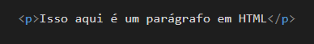
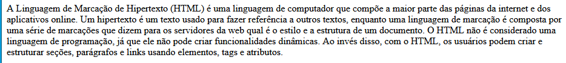
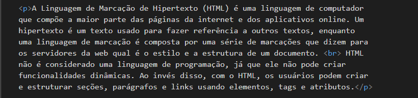
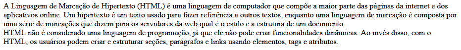
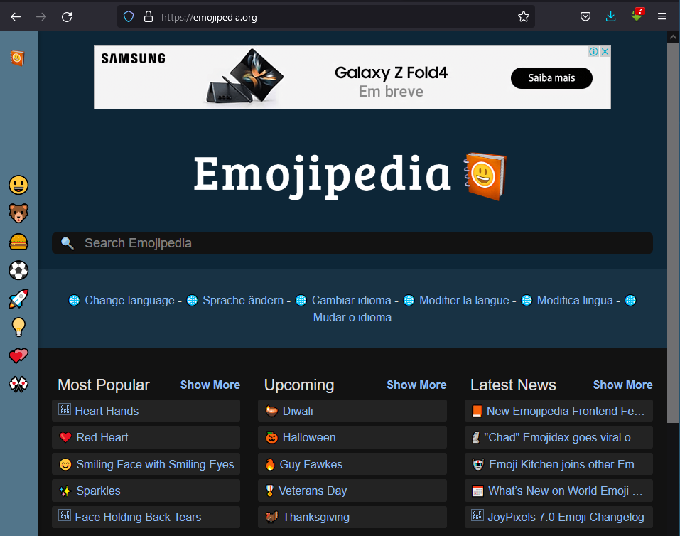
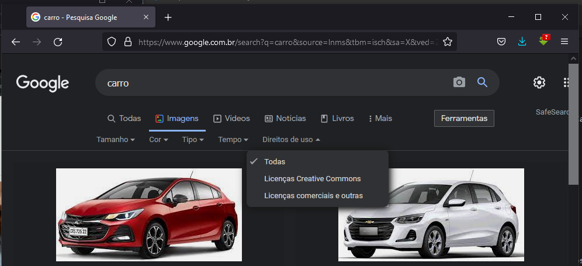
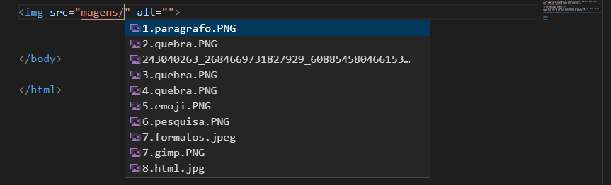
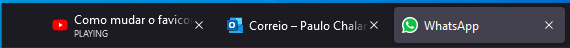
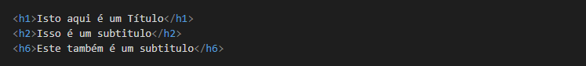

A Linguagem de Marcação de Hipertexto (HTML) é uma linguagem de computador que compõe a maior parte das páginas da internet e dos aplicativos online. Um hipertexto é um texto usado para fazer referência a outros textos, enquanto uma linguagem de marcação é composta por uma série de marcações que dizem para os servidores da web qual é o estilo e a estrutura de um documento.
O HTML não é considerado uma linguagem de programação, já que ele não pode criar funcionalidades dinâmicas. Ao invés disso, com o HTML, os usuários podem criar e estruturar seções, parágrafos e links usando elementos, tags e atributos.
Confira abaixo alguns dos usos mais comuns para o HTML:
Desenvolvimento web. Os desenvolvedores usam códigos HTML para projetar como um navegador vai exibir os elementos das páginas, como textos, hiperlinks e arquivos de mídia.
Navegação na internet. Os usuários podem navegar facilmente e inserir links entre páginas e sites relacionados, já que o HTML é amplamente usado para incorporar hiperlinks. Documentação. O HTML torna possível a organização e a formatação de documentos, de maneira similar ao Microsoft Word.
Também vale notar que o HTML agora é considerado um padrão oficial da internet. O World Wide Web Consortium (W3C) mantêm e desenvolve especificações do HTML, além de providenciar atualizações regulares.
Dentro do HTML, para criarmos parafos devemos usar a tag p para abir e feichar a tag.
Um site médio inclui diversas páginas HTML diferentes. Por exemplo, ele pode trazer uma página inicial, uma página “sobre” e uma página de contato. Cada uma delas possui um arquivo HTML separado.
Documentos HTML são arquivos que terminam com uma extensão .html ou .htm. Um navegador lê o arquivo HTML e renderiza o seu conteúdo para que os usuários da internet possam vê-lo.
Todas as páginas HTML possuem uma série de elementos, que consistem num conjunto de tags e atributos. Os elementos HTML são os tijolos de construção de uma página da internet. Uma tag diz para o navegador onde um elemento começa e termina, enquanto um atributo descreve as características de um elemento.
As três principais partes de um elemento são:
Tag de abertura - usada para dizer onde um elemento começa a ter efeito. A tag é cercada de colchetes angulares para abertura e fechamento. Por exemplo, use a tag de abertura <p> para criar um parágrafo.
Conteúdo - essa é a parte que os usuários verão.
Tag de fechamento - igual à tag de abertura, mas com uma barra antes do nome do elemento. Por exemplo, </p> para encerrar um parágrafo. A combinação dessas três partes vai criar um elemento HTML.
Como vimos todo conteudo em arquivo HTML está delimitado por tags. Sendo assim vamos aqui ver algumas das principais tags, para o uso básico do HTML.
Para criar um parágrafo use a tag de abertura <p> e a de fechamento </p>. Tudo o que estiver entre essas tags será considerado um parágrafo.
Exemplo:
Para o HTML o ENTER não tem efeito sobre um texto, já que toda configuração é feita com tags de marcação, sendo assim para gerar quebra em um texto grande é usada a tag <br> - break row, que quer dizer quebra de linha.
Vamos usar um parágrafo grande e quebrar o texto:
Podemos quebrar da seguinte forma:
O resultado será o seguinte:
Pode ver que o parágrafo é um só mais foi quebrado uma linha. Cada uso do <br> é uma quebra de linha.
A outra forma que temos para
Podemos usar os seguintes símbolos em nossoa exemplos: ® © ™ € < >. Nesse endereço pode encontrar mais combinações de Símbolos.
No site https://emojipedia.org/, podemos encotrar quase que todos os emojis possiveis para usarmos em um pagina HTML.
Para adicionar o emoji escolhido basta copar o seu codigo hexadecimal e copyar para o codigo com os &#x &comercial, cardinal e um x minisculo na frente como no exemplo abaixo:
😎 🖖As imagens são recuros muito importantes nos sites. Para isso vamos considerar alguns requisitos importantes sobre imagens:
Direitos autoorais - Para trabalhar de forma profissional e sem probelmas com images, deve ver se a imagem que vai usar no seu site tem ou não direitos autoriais.
Para encontar imgans com direitos livre de usar uma imgaem, use a ferramenta do google na opção Direito de uso, para trazer melhores resultados das imagens que podem ser usadas.
Outros sites que tem imagens profissonais livres são: • UnSplash • Pexels • FreePik • Rawpixel • Pixabay • Libreshot • Wikimedia Commons.
As imagens são os conteúdos mais divulgados nas redes sociais (72,4%) e os que mais geram engajamento (40,8%), segundo a pesquisa Social Media Trends 2017. Ou seja, mais cedo ou mais tarde, vai surgir a necessidade de criar imagens para suprir sua estratégia de Marketing Digital — seja durante a customização de um template, seja para as redes sociais, ou para a criação de um ebook. E é nesse momento que nos deparamos com diversas siglas esquisitas não fazem muito sentido numa primeira olhada. Sabe, aquelas que vem no fim do nome do arquivo e parecem não fazer diferença?
Não confunda formatos com tipos! Esses dois tipos de imagens serão abordadas neste artigo sobre formatos de imagens. Eles possuem algumas diferenças e afetam diretamente a forma como são utilizados. Bitmap - Também conhecido como “mapa de bits”(tradução literal) ou imagem rasterizada (do inglês raster) esses são os tipos de imagens mais comuns.Bitmaps são, literalmente, um mapa de bits. Isso significa que a imagem é formada por diversos pontos minúsculos (pixels). A cada um desses pixels é designada uma cor e, através de coordenadas X e Y, esses pixels de cores distintas são posicionados em uma malha e, assim, formam uma imagem.Vetores - São imagens que se baseiam em polígonos formados por pontos. Estes pontos são interpretados pelo computador levando em conta as suas distâncias Sendo assim, os vetores são infinitamente escaláveis. Você pode aumentar um vetor o quanto quiser pois não há perda de resolução no processo.
Quais são os formatos de images?
Existem vários formatos de imagem, cada um com suas características, vantagens e desvantagens. Porém, vamos nos focar aqui nos dois formatos compactados mais usados para a criação de sites: JPEG e PNG.
O algoritmo de compactação JPEG é usado para gerar imagens fotográficas com um tamanho extremamente reduzido. Ele foi criado em 1983 por Eric Hamilton e hoje é gerenciado pelo Joint Photographics Experts Group. Ele é amplamente utilizado por câmeras digitais modernas e programas de tratamento de imagens. A grande vantagem do uso de arquivos JPG (em formato JPEG) é gerar arquivos muito pequenos e que ocupam pouco espaço em disco. Isso é muito importante, pois quando colocarmos nosso site no ar, ele tem que ser leve e carregar as imagens muito rapidamente. Só toma cuidado para não exagerar na hora de configurar o nível de compactação. Isso pode fazer com que sua imagem fique horrível e toda borrada (dá só uma olhada na imagem abaixo).
O formato Portable Network Graphics (PNG) surgiu em 1996, desenvolvido pelo W3C (o mesmo órgão que gerencia a linguagem HTML) com o objetivo de substituir o formato GIF (que hoje voltou a ser popular graças ao WhatsApp e Instagram). Ele também é um formato compactado, mas não tanto quanto o JPEG. A principal característica do PNG - e que o diferencia do JPEG - é a capacidade de configurar a opacidade de cada pixel (deixá-lo transparente ou com transparência limitada).
Para gerenciamos as imagesm de forma profissional e gratuita, pode baixar e usar o GIMP, uma ferramenta free e muito poderosa.
Para colocar uma imagem em HTML, podemos usar a <img src="" alt=""> e a imagem deve estar em uma pasta dentr ou fora do prejeto.
Também podemos carregar imagens de sites externos, copiando apenas o link da imagem e colar no src da tag img.

Um favicon é a imagem em mininhatura colocada, no canto superior do separador.
Para criar um favicon, basta selecionar uma imgem previamente escolhida e trabalhada, e usar o site favicon.io, para converter a imagem. O formato da imagem de favicon é .ico
Ele é carregado com a tag <link favicon >
Assim como em um livro, uma página web pode conter uma hierarquia de títulos e subtítulos para estabelecer uma divisão de seu conteúdo e, para conseguirmos realizar essa tarefa, utilizamos as tags de título h1, h2, h3, h4, h5 e h6.
As tags <h1> - <h6> informam ao navegador que trata-se de um título (h vem de “heading” – cabeçalho ou título ), sendo <h1> o título de primeiro nível apresentado com o maior tamanho de texto; <h2> o subtítulo de segundo nível apresentado com tamanho de texto um pouco menor; e <h6> o subtítulo de sexto nível apresentado com o menor tamanho de texto. Vamos a um exemplo:
